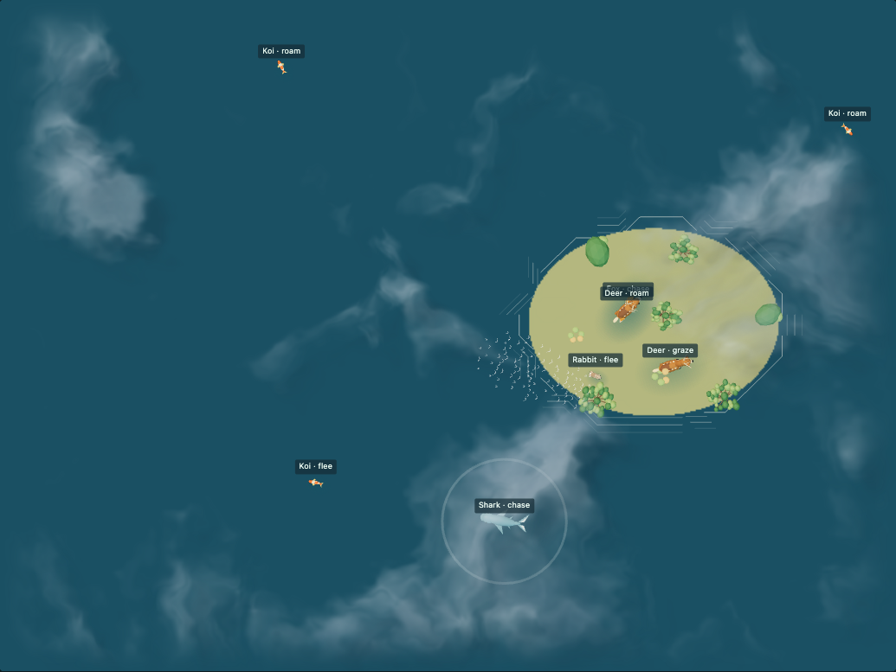
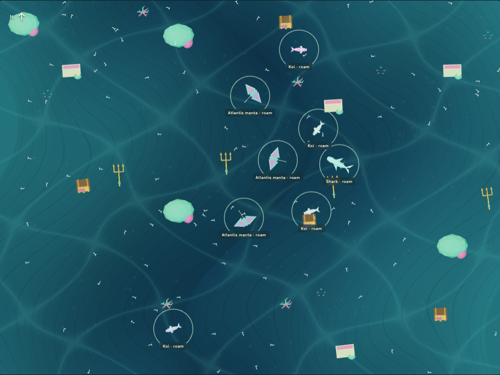
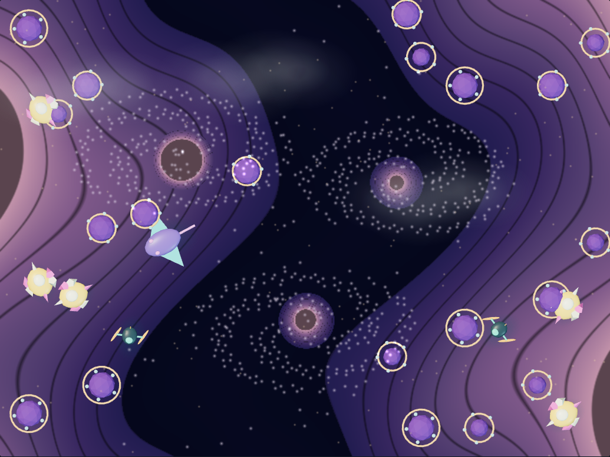
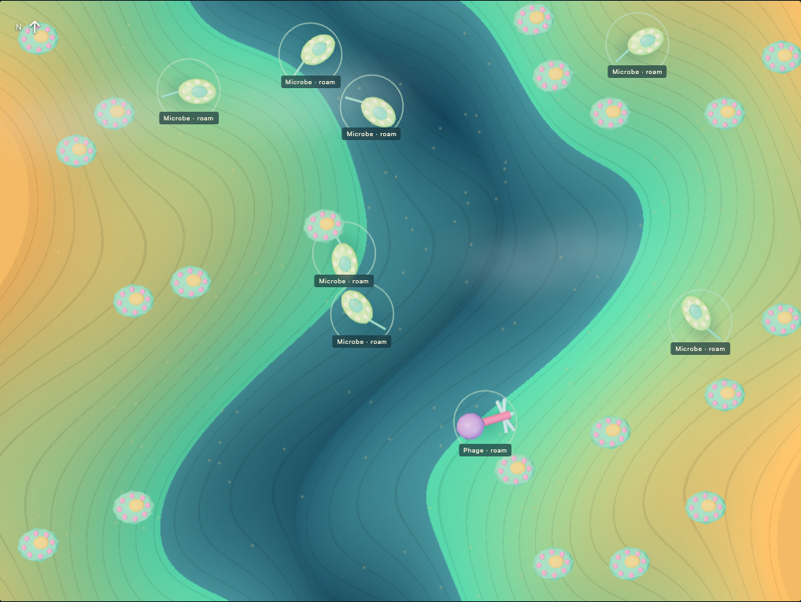
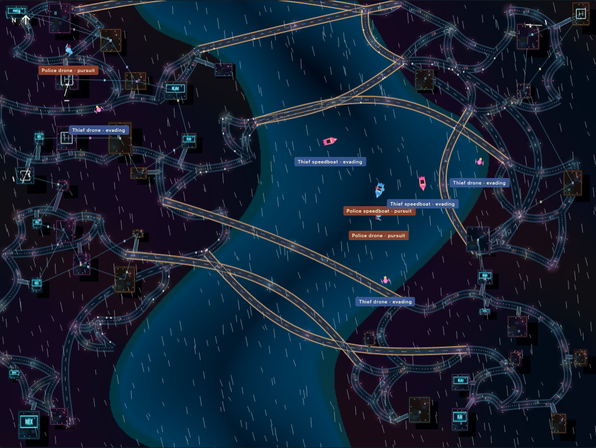
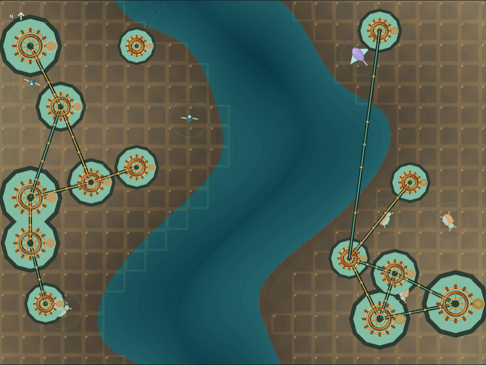
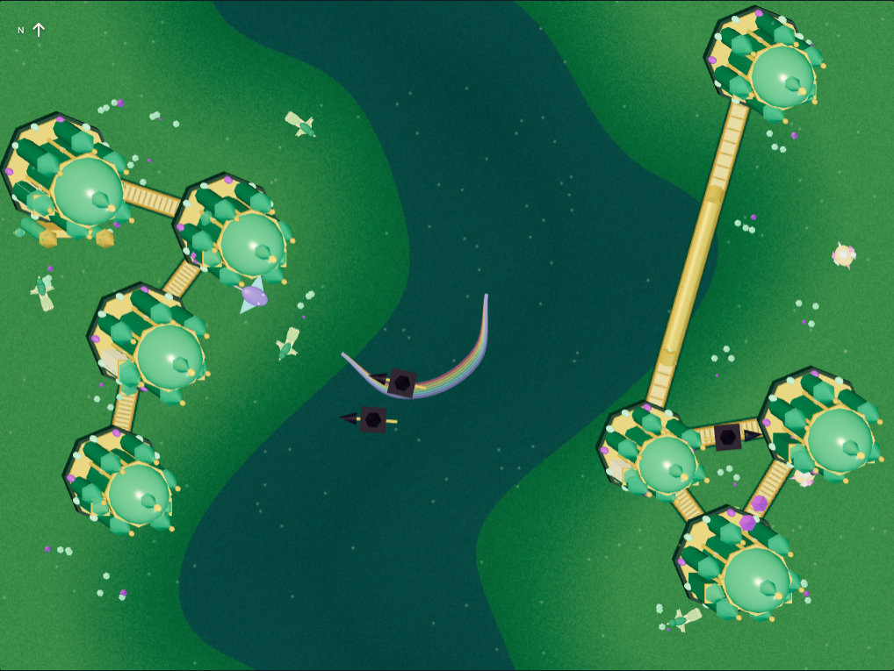

Shape the land
Raise peaks, carve valleys, and build islands. The Kinect depth feed captures the surface of the sand.
A HANDS-ON WORLD OF POSSIBILITY
Build a mountain. Make a river.
Watch a little world come alive.
Terrain Lab turns a box of sand into an interactive, projected landscape. Explore its terrain and wildlife right here in your browser, then bring it into the physical world.
Browser mode needs no sensor. Live sandbox adds Kinect and projector setup.
01 / THE IDEA
In a physical sandbox, a depth camera reads the shape of the sand. Terrain Lab turns those heights into colorful contours and water, then projects them back onto the surface. Move the sand, and the landscape changes with it.
Raise peaks, carve valleys, and build islands. The Kinect depth feed captures the surface of the sand.
Elevation becomes color and contour. Choose a world, adjust the water line, and watch the map take shape.
Wildlife seeks safe habitat. Rabbits flee foxes, deer evade wolves, and sharks pursue fish. Reach in with your pointer to rescue an animal.
02 / CHOOSE YOUR MODE
Start with a demo.
Bring your curiosity.

01 / LIVE SANDBOXUse the full scene controls with sample terrain, then connect a Kinect and align a projector when your physical rig is ready.

02 / BROWSER MODEShape a sample landscape, explore every world and creature, rescue wildlife, and enter fullscreen. No sensor or projector needed.
03 / BEYOND THE LANDSCAPE
Make a mountain.
Watch the world change.

Group sand into peaks and watch spiral galaxies form. Carve valleys for scattered stars.

Living cells pulse while microbes evade phages in a world beneath our eyes.

Neon towers, circuits, and drones turn the same terrain into a glowing city.

Unearth a lost dwarven city: bronze domes, broken gates, steam-driven foundries, and automatons patrolling stone streets.

Yellow brick roads lead to emerald palaces and cross water. Gems sparkle, rainbows appear, and witches chase the city’s citizens.
04 / THE INHABITANTS
48 animated species.
Eight creatures at a time.
05 / FROM SCREEN TO SAND
A Kinect v1, an overhead projector, a box of sand, and a Mac. The field guide walks through the local bridge, calibration, and projector workflow.
Read the field guide →An evolving open-source project. Physical alignment and visual approval remain part of each rig's setup.